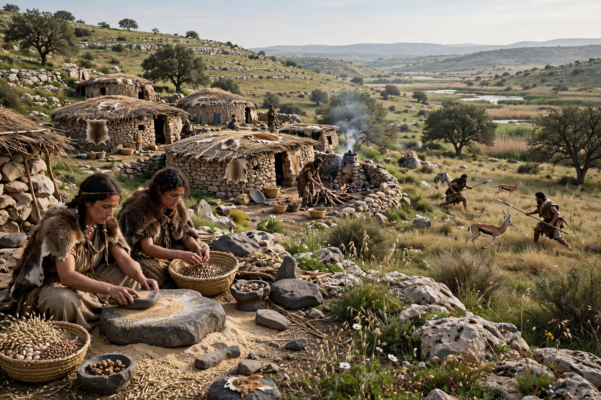

Period: Epipaleolithic, c. 15,000–11,500 years ago
Region: The Levant
Named by: Dorothy Garrod (after Wadi an-Natuf)
Followed by: Neolithic (PPNA)
The Natufian culture is an archaeological culture of the Epipaleolithic period in the Levant, dating roughly to 15,000–11,500 years before present. Named by Dorothy Garrod after excavations at Shuqba Cave in Wadi an-Natuf, it is notable as the culture of some of the world's first sedentary or semi-sedentary hunter-gatherers, appearing before the introduction of agriculture.
Natufian sites such as Eynan (Ain Mallaha) and Hayonim feature round stone-built dwellings. Communities intensively harvested wild cereals — evidenced by sickle blades, grinding stones, and storage pits — and hunted gazelle. They are associated with some of the earliest evidence for bread-making (at Shubayqa 1, Jordan) and beer brewing hypotheses, and with early dog domestication in burials such as Ein Mallaha.
The later Natufian coincided with the Younger Dryas cold snap, possibly pushing some groups back toward mobility; successor cultures developed into the Pre-Pottery Neolithic.